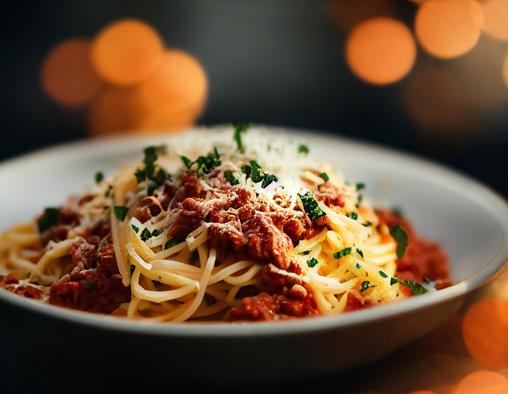

Ngoni's Spaghetti Bolognese

A delicious Asian twist on an Italian classic
Inspired By:Marion's Kitchen
Ingredients
- Salt
- Soy Sauce
- Olive Oil
- Butter
- Parmesan Cheese
- Chilli Flakes
- Garlic
- Mushroooms
- Spaghetti
- Spring Onions
Recipe Instructions
- Finely grate the parmesan cheese, chop the mushroom slices,
also peel and crush the garlic cloves.
- Infuse the olive oil with garlic by heating some cloves in
an oil-coated pan until its fragrant.
- Boil the spaghetti in salted water.
- Add butter, mushrooms, and chilli flakes into another pan:
fry and stir until the butter is melted.
- Add soy sauce to the pan, simmer for a minute then turn off
the heat.
- When the pasta is done, drain the water.
- Turn on the pan heat once again, add the pasta in and stir
until it has a thick, glossy coating.
- Turn off the heat and top with drizzle of garlic oil,
parmesan cheese, and finely chopped spring onions.
- Serve!
Return To Home